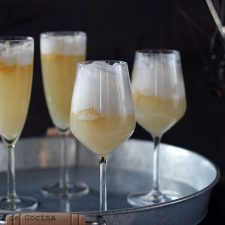

Ponche a la romana
Ingredientes
- 1 botella de champagne
- 1 litro de helado de piña
- 1 piña natural o un tarro en conserva
Preparacion
- Colocar en cada copa uno o dos porciones de helado de piña, agregar piña picada y finalmente completar con champagne.